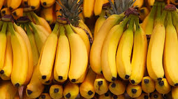
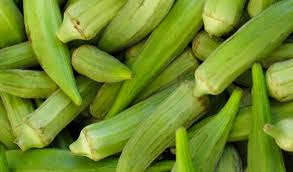

Yam are native to warmer regions of both hemispheres, and several spices arde cultivated as staple food crops in the tropics. In certain tropics cultures, notably in the West African and New Guinea, the yam is the primary agricultural commodity and the focal point of elaborate rituals. Yams are consumed as cooked starchy vegetables.
Our Raw Food Products

African Plantain
Plantain major groups of banana varieties (Genus Musa) that are staple foods in many tropical areas. The edible fruit of plantain bananas has more starch than the common dessert bananas and is not eaten raw. Beacause, plantains have the most starch before they ripen, they are usually cooked green, boiled or fried, in savory dishes. The ripe fruit s are mainly sweet and are often cooked with coconut juice or sugar as a flavouring. Plantians may also be dried for later use in cooking or ground for use as meal, which can be further refined to a flour.
Our Raw Food Products
African Garden Eggs
African garden eggs are a type of eggplant used as a food crop in several countries across Africa. These small, white friuts have a teardrop or roundish shape and are valued for bitterness. Garden egg is indigenous to sub-Sahara Africaand can be stored for up to three months by allowing it to dry, which is particularly useful in tropical regions where refrigerators may be limited. In Ghana, garden egg is one of the three most consumed vegetables, alongside tomatoes and peppers. It is used in stews and can also be eaten raw. Interestingly, the stems and the leaves of garden eggs are consumed in some part of Arican countries, although not in Ghana. Due to its spongy texture, garden egg is sometimes used as a less expensive meat subtitute, as it absorbs other flavours well.
Our Raw Food Products

Okro
Okro also known as okra, gumbo, or lady's fingers, is a versatile vegetable found around the world. It is often used for making soups, stews and sauce. In Nigeri, it is a key ingredient in popular dishes like okra soup and ogbono-okra mixed soup. Okra is a flowering plant with edible seed pods, and it is cultivated in warm and tropicalclimates, including Africa and South Asia.